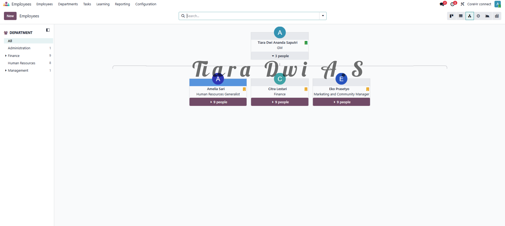
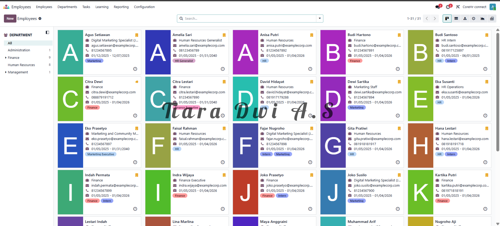
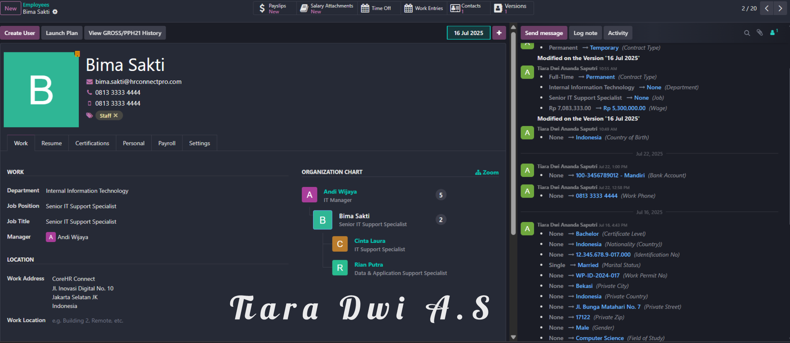
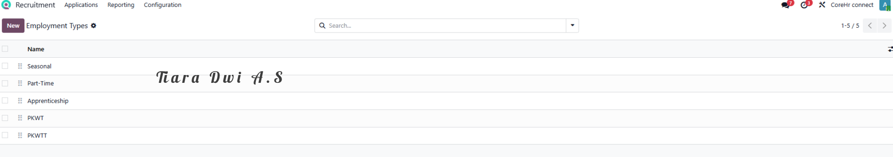
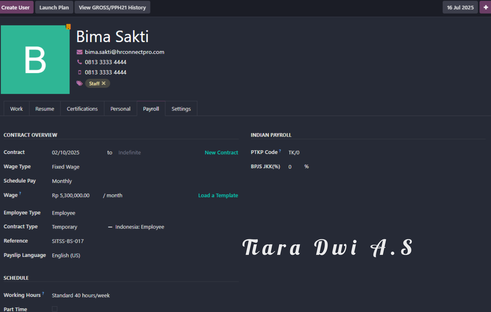
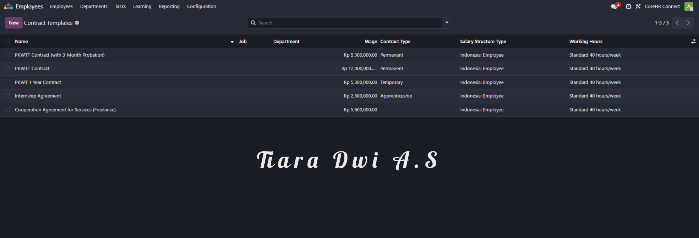
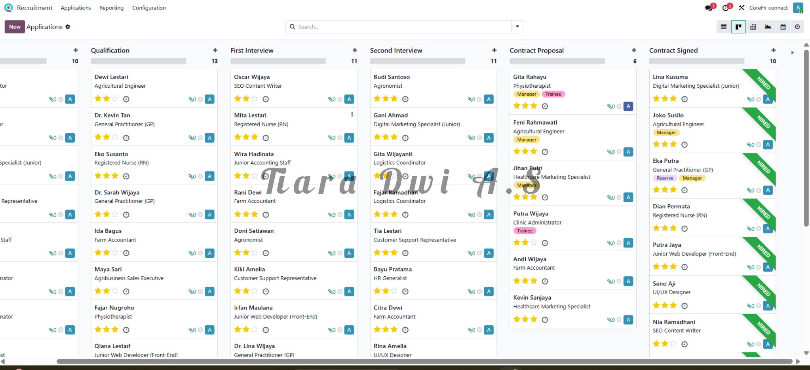
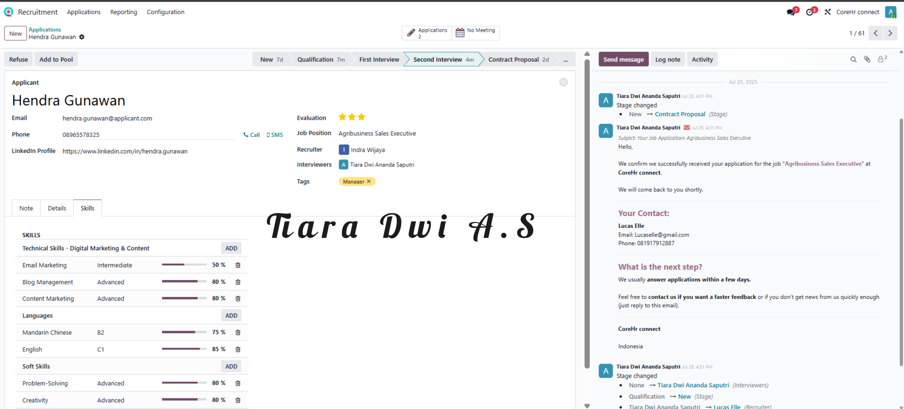
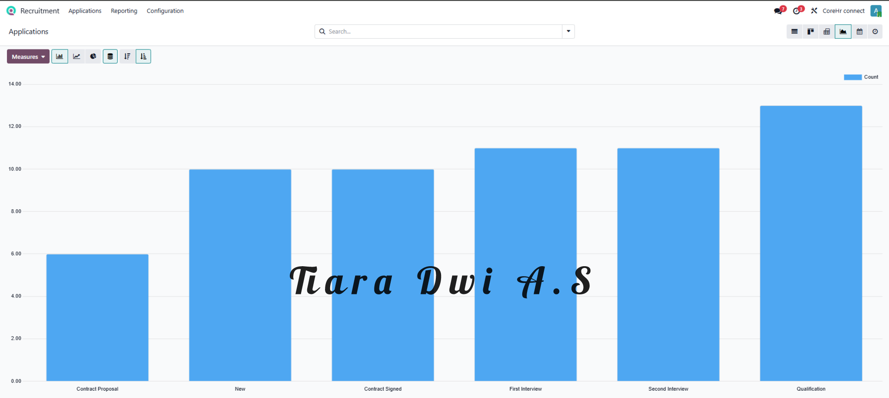

HRIS Learning Project Proyek Belajar HRIS
CoreHR Connect with Odoo. CoreHR Connect dengan Odoo.
A comprehensive case study showcasing implementation of Odoo ERP modules to automate employee management, streamline recruitment, and ensure compliance with Indonesian labor regulations for SMEs. Studi kasus komprehensif yang menampilkan implementasi modul ERP Odoo untuk mengotomatisasi manajemen karyawan, menyederhanakan rekrutmen, dan memastikan kepatuhan hukum ketenagakerjaan Indonesia bagi UMKM.
Module 01 Modul 01
Employee Connect: Centralized & Compliant Database. Employee Connect: Database Terpusat & Patuh Regulasi.
The Challenge Tantangan
Indonesian SMEs face challenges with fragmented employee data scattered across files and spreadsheets. Managing complex compliance for diverse employment types (PKWT, PKWTT, Seasonal, Apprenticeship) under Indonesian labor laws, BPJS, and PPh 21 creates major operational and legal risks. Paper-heavy onboarding also slows down integration. UMKM di Indonesia menghadapi tantangan berupa data karyawan yang terpencar di berbagai file dan spreadsheet. Mengelola kepatuhan hukum ketenagakerjaan yang rumit untuk berbagai jenis hubungan kerja (PKWT, PKWTT, Musiman, Magang), serta integrasi BPJS dan PPh 21 menciptakan risiko operasional dan kepatuhan yang besar. Proses onboarding manual juga memperlambat produktivitas.
The Odoo Solution Solusi Odoo
Comprehensive Profiles & Skills Management: Established a unified employee database to store personal data, work history, and competencies (soft and hard skills), forming a single source of truth. Profil Lengkap & Manajemen Keterampilan: Membangun database karyawan terpusat untuk menyimpan data pribadi, riwayat kerja, dan kompetensi (keterampilan teknis dan non-teknis) sebagai satu acuan utama data.
Clear Organizational Hierarchy: Visualized reporting lines and departmental structures directly in Odoo to improve team communication and strategic workforce planning. Hierarki Organisasi yang Jelas: Memvisualisasikan jalur pelaporan dan struktur departemen langsung di Odoo untuk meningkatkan komunikasi tim dan perencanaan tenaga kerja strategis.
Indonesian Labor Law Integration: Configured contracts with PKWT and PKWTT templates, automating compliant contract generation and reducing administrative risk. Integrasi Hukum Ketenagakerjaan Indonesia: Mengonfigurasi kontrak kerja dengan template PKWT dan PKWTT, mengotomatisasi pembuatan dokumen kontrak yang patuh regulasi dan meminimalkan risiko kepatuhan.
Digital Onboarding: Shifted paperwork to digital document collection, cutting new hire form completion time by 50%. Onboarding Digital: Mengalihkan pengisian dokumen fisik ke sistem digital, mengurangi waktu pengisian dokumen onboarding hingga 50%.

Visualized dynamic organizational hierarchy and reporting lines in Odoo. Visualisasi hierarki organisasi dan jalur pelaporan dinamis dalam Odoo.
Centralized Employee Profile Dashboard showing work information and skills. Dashboard Profil Karyawan terpusat menampilkan informasi kerja dan keterampilan.
Detailed employee profile view with skills inventory (e.g., candidate Bima Sakti). Tampilan profil karyawan detail dengan daftar keterampilan (contoh: profil Bima Sakti).
Contract types configured for Indonesian labor laws (PKWT, PKWTT, Apprenticeship). Jenis kontrak yang dikonfigurasi untuk hukum ketenagakerjaan Indonesia (PKWT, PKWTT, Magang).
Employment contract details mapped with wage terms and durations. Rincian kontrak kerja yang terintegrasi dengan durasi dan rincian upah.
Pre-defined, compliant contract document templates integrated for direct PDF export. Draf template dokumen kontrak patuh hukum yang terintegrasi untuk ekspor PDF langsung.Module 02 Modul 02
Recruitment Connect: Automated Sourcing Pipeline. Recruitment Connect: Alur Kerja Rekrutmen Otomatis.
The Challenge Tantangan
Without structured tracking, SMEs experience chaotic candidate pipelines and extended hiring cycles. Manual resume screening and lack of automated communication create delays, while manual data entry limits data for strategic recruitment. Tanpa pelacakan terstruktur, UMKM mengalami ketidakteraturan dalam mengelola pipeline kandidat dan siklus perekrutan menjadi lama. Penyaringan resume manual dan kurangnya komunikasi otomatis menyebabkan keterlambatan, sementara entry data manual membatasi analisis rekrutmen.
The Odoo Solution Solusi Odoo
Multi-Stage Recruitment Pipeline: Designed an intuitive Kanban pipeline (New, Qualification, First Interview, Contract Proposal, Hired) to easily drag and drop applicants through stages. Pipeline Rekrutmen Multi-Tahap: Merancang Kanban pipeline yang intuitif (Baru, Kualifikasi, Wawancara Pertama, Penawaran Kontrak, Diterima) untuk mempermudah pelacakan kandidat secara visual.
Automated Email Data Capture: Configured Odoo to monitor recruitment email inboxes. Resumes sent by applicants automatically generate centralized candidate records with attachments. Pengambilan Data Email Otomatis: Mengonfigurasi Odoo untuk memantau email masuk rekrutmen. Resume yang dikirim pelamar otomatis membuat entri kandidat terpusat beserta lampirannya.
Streamlined Job Postings: Integrated job posting creation with our simulated website, facilitating instant publishing for specialized roles like Agronomist or Digital Specialist. Publikasi Lowongan Cepat: Mengintegrasikan pembuatan lowongan dengan situs web simulasi, memfasilitasi publikasi instan untuk posisi spesifik seperti Agronomist atau Digital Specialist.
Interview Scheduling & Communication: Integrated calendars and automated email updates to enhance the candidate experience and reduce administrative overhead. Penjadwalan Wawancara & Komunikasi: Integrasi kalender dan pembaruan email otomatis untuk meningkatkan kenyamanan kandidat serta mengurangi tugas administratif manual.

Kanban view showing the applicant pipeline across job positions. Tampilan Kanban menampilkan tahapan pelamar di berbagai lowongan kerja.
Detailed view of a candidate profile (e.g. Bima Sakti) showing emails, logs, and stages. Detail profil kandidat (contoh: Bima Sakti) menampilkan riwayat email, catatan log, dan tahapan.
Automated confirmation email thread integrated directly into the candidate record. Rantai komunikasi email konfirmasi otomatis yang terintegrasi dalam data kandidat.CoreHR Connect CoreHR Connect